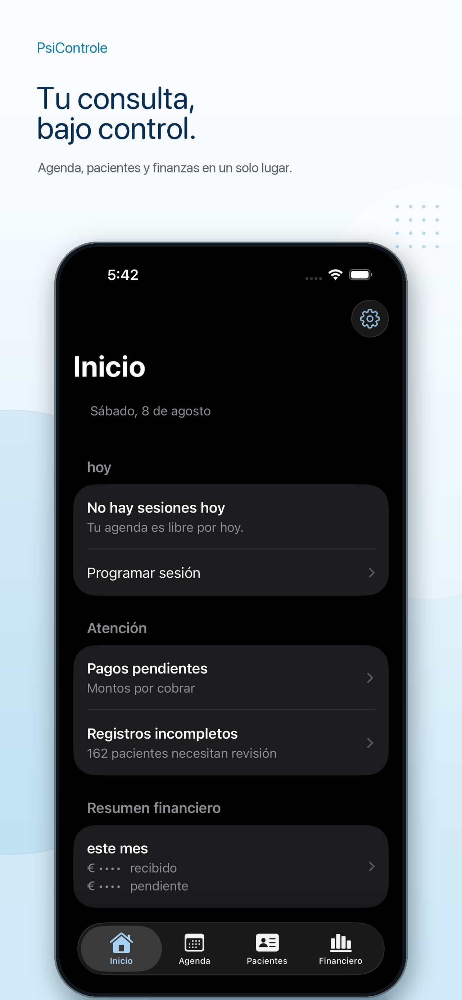
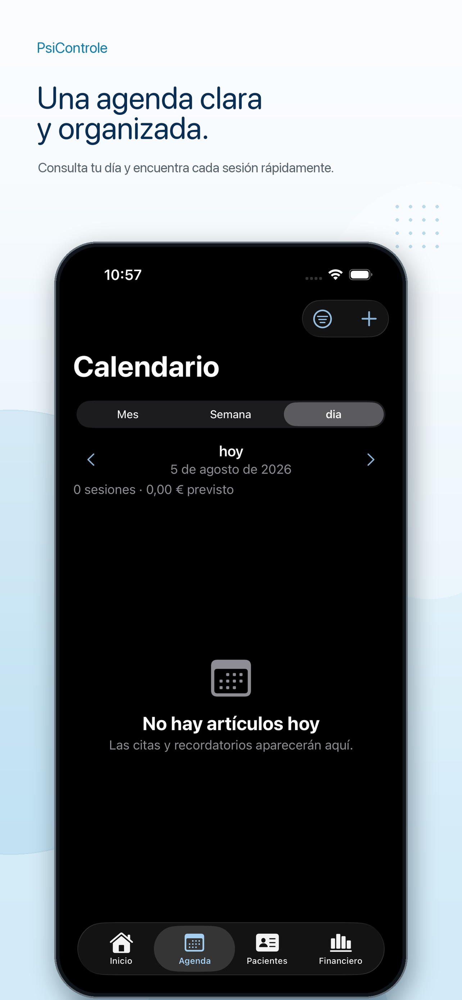
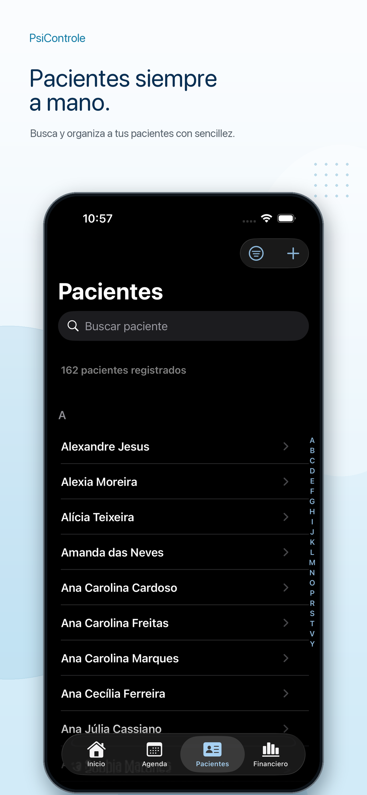
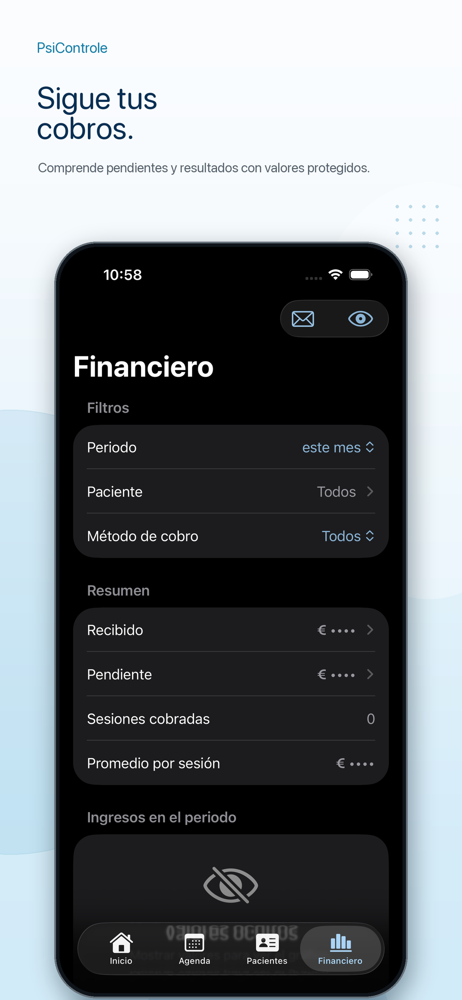
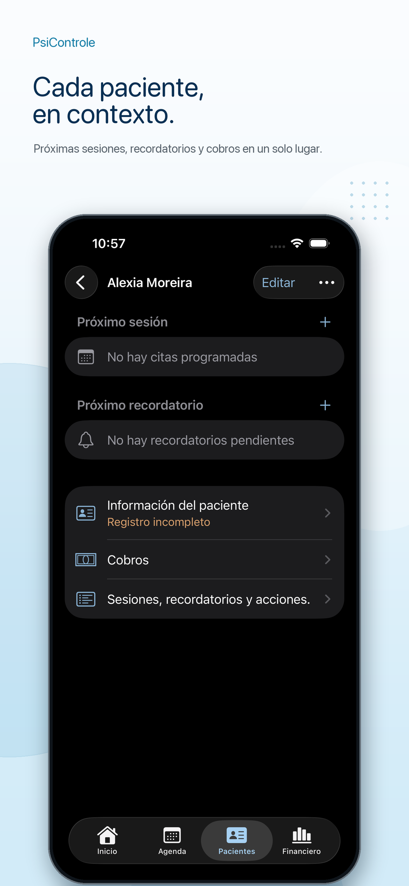
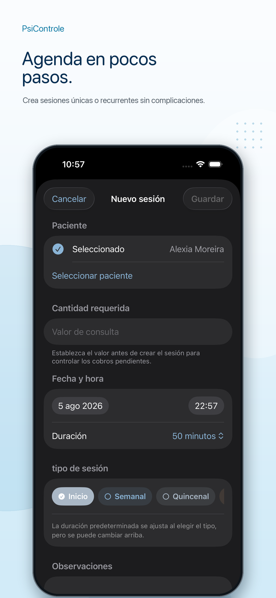
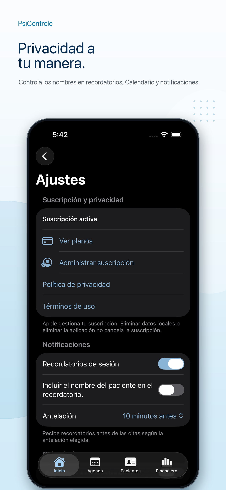

Sesiones organizadas por día.
Consulta las sesiones de hoy, los próximos compromisos, las recurrencias y los recordatorios con una visión clara de tu semana clínica.
App nativa para iOS
PsiControle reúne pacientes, agenda, sesiones, recordatorios y finanzas en una experiencia sencilla para iPhone, con privacidad y datos almacenados localmente.
Sin panel web. Sin cuenta externa. Con Calendario, CSV, Siri y Atajos opcionales.

Rutina clínica
Mantén la agenda, el contexto de cada paciente, las tareas pendientes y las finanzas siempre a mano, sin depender de hojas de cálculo, notas sueltas ni herramientas desconectadas.
Consulta las sesiones de hoy, los próximos compromisos, las recurrencias y los recordatorios con una visión clara de tu semana clínica.
Mantén los contactos, documentos, dirección, notas, historial y tareas pendientes vinculados a la ficha de cada paciente.
Filtra los pagos, consulta las cantidades pendientes y el resumen del periodo, con la opción de ocultar la información financiera.
Consulta la agenda y los pacientes, crea o completa sesiones y registra pagos con Siri o la app Atajos.
Agenda
Planifica el día, sigue rutinas semanales, quincenales o mensuales y mantén los recordatorios sincronizados con el Calendario de iOS.

Pacientes
Busca, filtra y revisa las fichas con la información más importante para tu rutina.

Finanzas
Usa filtros por periodo, paciente y método de pago para seguir la consulta sin convertir la app en un sistema de contabilidad.

Privacidad y seguridad
Los datos principales permanecen en el iPhone. Las integraciones con Calendario, notificaciones, Siri, Atajos, Spotlight y exportación son opcionales y las configura el usuario.
Pantallas
Conoce las áreas principales de la app: inicio, agenda, pacientes, detalles, nueva sesión, finanzas y ajustes.



PsiControle
Empieza con una app sencilla creada para psicólogos que buscan claridad, privacidad y menos fricción operativa.
Descargar en elApp Store